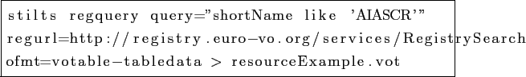
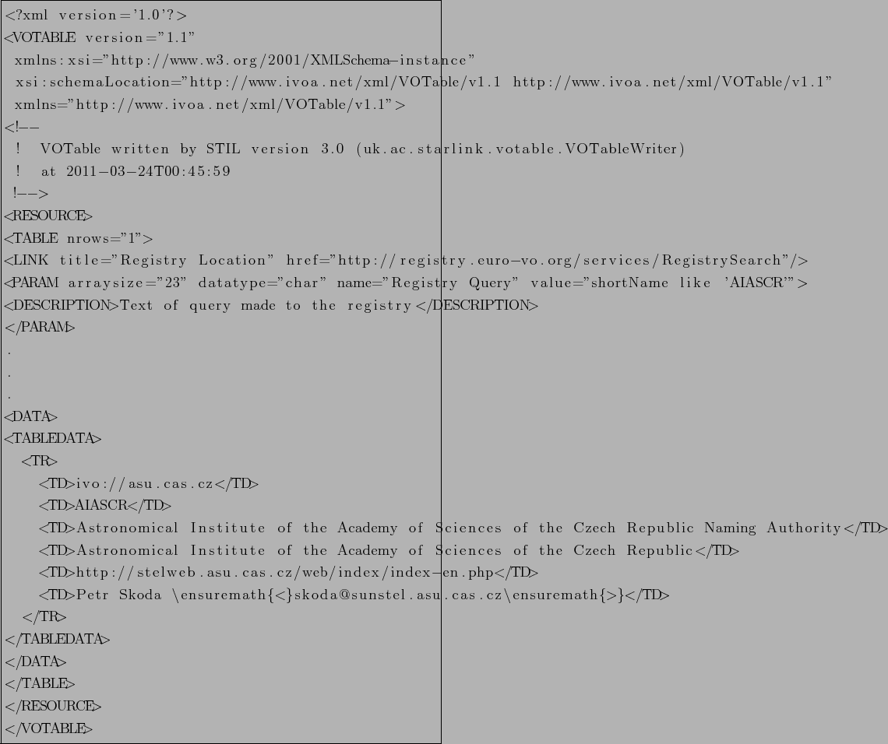

Next: Data Access Protocols Up: Virtual Observatory (VO) Previous: Architecture Contents
A resource is a general term referring to a VO element that can be described in terms of who curates or maintains it and which can be given a name and a unique identifier. Just about anything can be a resource: it can be an abstract idea, such as sky coverage or an instrumental setup, or it can be fairly concrete, like an organization or a data collection. [Benson et al.(2009)Benson, Plante, Auden, et al.]
UML  diagram of the resource in on the figure
1.3. Resource can be a generalization of organization,
data collection, application or service. Organization can be linked
together with other organization. The same is true for data
collection. Organization ia a generalization of and/or provider which
can own zero to N services. Publisher can have zero to N resources.
diagram of the resource in on the figure
1.3. Resource can be a generalization of organization,
data collection, application or service. Organization can be linked
together with other organization. The same is true for data
collection. Organization ia a generalization of and/or provider which
can own zero to N services. Publisher can have zero to N resources.
|
[height=10cm]resource
[bb = 92 86 545 742, height=6in]resource.png
|
Example of resources

